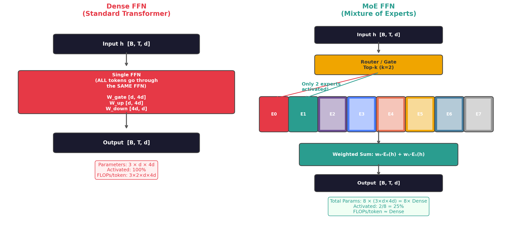
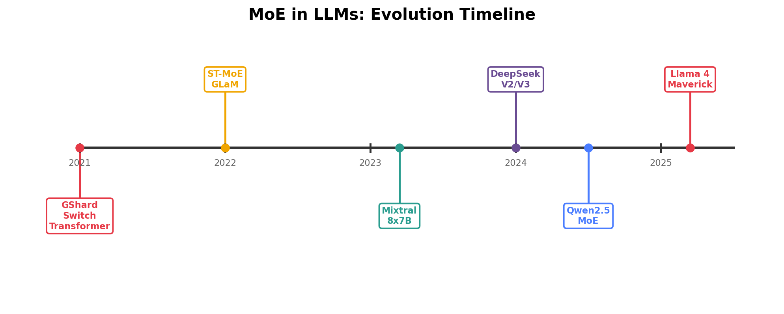
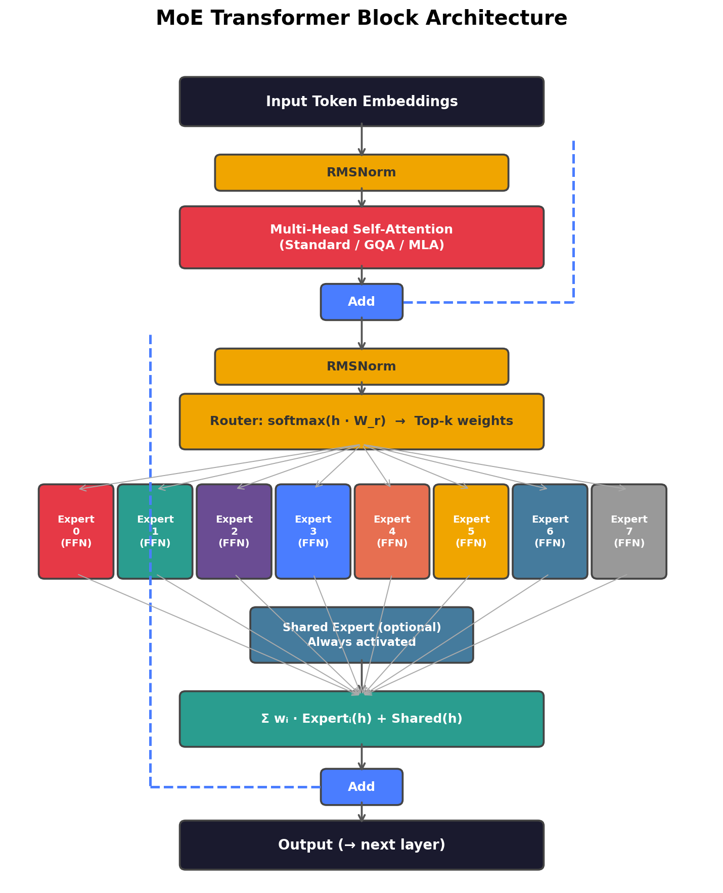
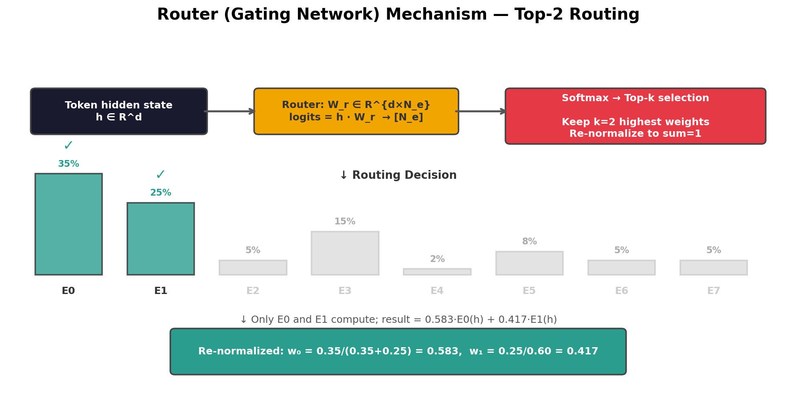
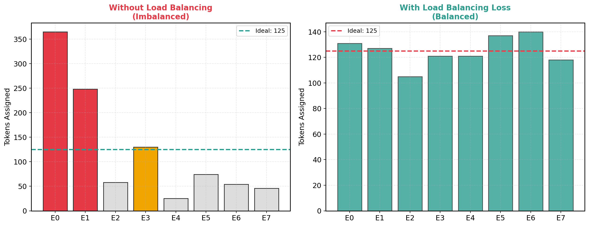
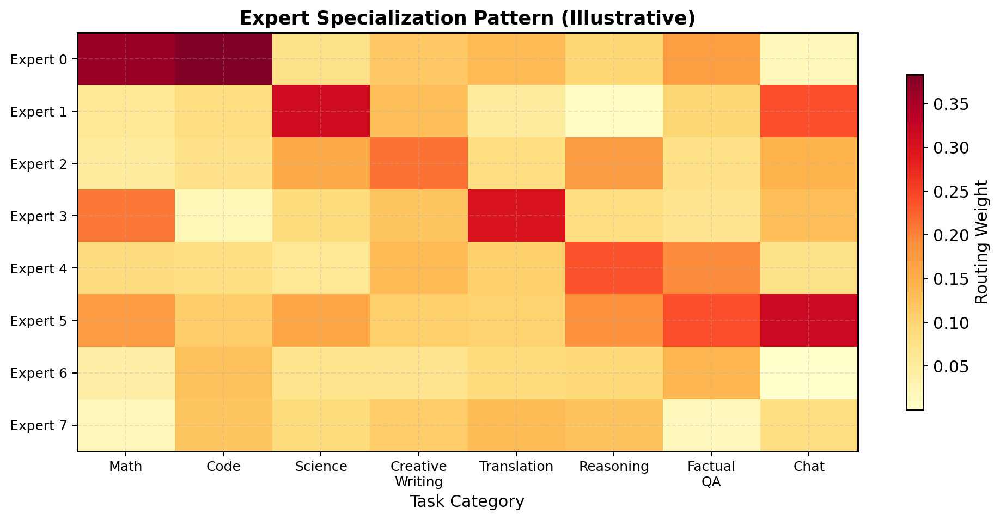
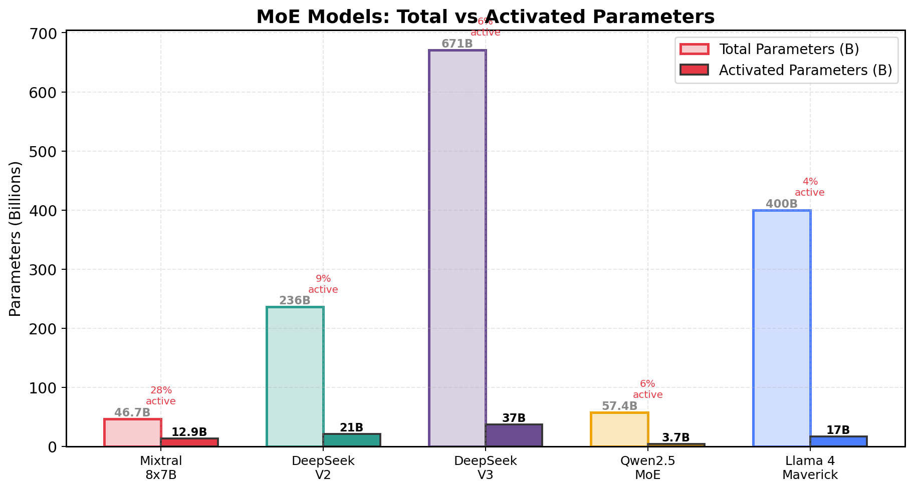

MoE（Mixture of Experts，混合专家）是一种稀疏激活的模型架构： 将 Transformer 的 FFN 层替换为多个并行的"专家"（Expert）FFN， 每个 token 只激活其中少数几个专家，而非使用全部参数。


MoE 模型的结构与标准 Transformer 几乎相同——唯一的区别是将部分或全部层的 FFN 替换为 MoE 层。 注意力层完全不变。

其中：

| 策略 | 描述 | 激活率 | 代表模型 |
|---|---|---|---|
| Top-1 | 每 token 只激活 1 个专家 | 1/N | Switch Transformer |
| Top-2 | 每 token 激活 2 个专家，加权求和 | 2/N | Mixtral, DeepSeek-V2/V3 |
| Top-k + Shared | Top-k 路由专家 + 1 个始终激活的共享专家 | (k+1)/N | DeepSeek-V2/V3 |
| Expert Choice | 由专家选择 token（而非 token 选择专家） | 固定 | Google Expert Choice |
| Fine-grained MoE | 更多更小的专家（如 64 个小专家），每次激活更多 | k/N (k 较大) | DeepSeek-V3 (256 experts) |
如果 Router 将大部分 token 路由到少数"热门"专家，会导致：(1) 这些专家的 GPU 过载； (2) 其他专家得不到训练，逐渐退化。

这个辅助负载均衡损失与主 loss 一起优化，鼓励 Router 均匀分配 token。 超参数 α 控制均衡力度（通常 0.01-0.1）。
DeepSeek-V2 引入了共享专家机制：除了 N 个路由专家外， 额外设置 1-2 个始终激活的共享专家，所有 token 都通过它们。
DeepSeek-V3 使用 256 个路由专家 + 1 个共享专家，每 token 激活 Top-8 个路由专家。 相比 Mixtral 的 8 个大专家，这种"更多更小的专家"设计带来更精细的路由选择和更好的负载均衡。
| 模型 | 路由专家数 | 共享专家 | Top-k | 每专家参数 | 设计思路 |
|---|---|---|---|---|---|
| Mixtral 8x7B | 8 | 无 | 2 | ~7B | 少量大专家 |
| DeepSeek-V2 | 160 | 2 | 6 | ~0.13B | 大量小专家 |
| DeepSeek-V3 | 256 | 1 | 8 | ~0.37B | 超细粒度 |
| Qwen2.5-MoE | 60 | 4 | 4 | ~0.25B | 中等粒度 |
研究发现，MoE 模型中的专家会自然地产生领域特化—— 某些专家更擅长数学推理，某些擅长代码生成，某些处理多语言文本。 这种特化是通过训练自动涌现的，而非手动设计。


架构：32 层 Transformer，每层的 FFN 被替换为 8 个完整 FFN 专家。 每个专家与 Mistral 7B 的 FFN 结构相同（SwiGLU，中间维度 14336）。 使用 GQA（8 个 KV 头）和滑动窗口注意力（w=4096）。
创新：(1) 首个高质量开源 MoE LLM，性能匹配 LLaMA-2 70B 但推理速度快 6 倍； (2) 证明了 MoE 在中等规模也非常有效——不一定需要千亿参数才能受益。
性能：在 MMLU（70.6%）、GSM8K（74.4%）、HumanEval（40.2%）等基准上 匹配甚至超越 LLaMA-2 70B，但推理时只激活 12.9B 参数。
架构创新：(1) Multi-head Latent Attention (MLA)—— 用低秩压缩替代 GQA，KV Cache 降至标准 MHA 的 5-13%； (2) 细粒度 MoE——160 个小专家 + 2 个共享专家， 相比 Mixtral 的 8 个大专家，路由更精细、负载更均衡； (3) Device-Limited Routing——限制每个 token 最多路由到 M 个设备上的专家， 减少 All-to-All 通信。
性能：在多数基准上与 LLaMA-3 70B 持平，但推理成本只有约 1/3。 训练成本仅为 LLaMA-3 70B 的约 1/10。
架构：61 层，MLA 注意力 + 256 路由专家 MoE。 创新包括：(1) Multi-Token Prediction (MTP)——同时预测多个未来 token， 提升训练效率和推理速度（通过投机解码）； (2) 无辅助损失的负载均衡——用动态偏置替代辅助 loss， 避免辅助 loss 对主任务的干扰； (3) FP8 混合精度训练——在 2048 块 H800 GPU 上完成训练。
性能：在 MMLU (88.5%)、MATH (90.2%)、Codeforces (51.6%) 等基准上 达到 GPT-4o 和 Claude 3.5 Sonnet 水平，训练成本仅约 557 万美元。
特点：(1) 极高的参数效率——3.7B 激活参数达到 Qwen2.5-7B（Dense）的性能； (2) 4 个共享专家，比 DeepSeek 更多，强化通用知识基座； (3) 支持 128K 上下文窗口。
特点：(1) Meta 首个公开的 MoE 模型，标志着 MoE 从"小众技术"变为行业标配； (2) Top-1 路由——每 token 只激活 1 个专家，极致稀疏； (3) 原生多模态支持（文本 + 图像）； (4) 超长上下文 1M tokens。
| 模型 | 总参数 | 激活参数 | 激活率 | 专家数 | Top-k | 共享专家 | 注意力 | 训练数据 |
|---|---|---|---|---|---|---|---|---|
| Mixtral 8x7B | 46.7B | 12.9B | 28% | 8 | 2 | 无 | GQA + SWA | 未公开 |
| DeepSeek-V2 | 236B | 21B | 9% | 160 | 6 | 2 | MLA | 8.1T |
| DeepSeek-V3 | 671B | 37B | 6% | 256 | 8 | 1 | MLA | 14.8T |
| Qwen2.5-MoE | 57.4B | 3.7B | 6% | 60 | 4 | 4 | GQA | 18T |
| Llama 4 Maverick | 400B | 17B | 4% | 128 | 1 | 未知 | GQA | 30T+ |
MoE 模型的训练和推理引入了一种专有的并行方式——专家并行（Expert Parallelism, EP）。
将 N 个专家分布到不同 GPU。每个 GPU 持有 N/EP_size 个专家。 Token 通过 All-to-All 通信路由到目标专家所在的 GPU。
单个专家内部可以再做张量并行（TP）。常见配置：EP=8（跨节点），TP=4（节点内）。 注意力层仍用标准 TP。
不同层组放在不同 pipeline 阶段。MoE 层和非 MoE 层可能在不同阶段， 需要平衡计算量。
分层 All-to-All（先节点内再节点间）、通信-计算重叠、 限制跨节点路由（Device-Limited Routing）等。
MoE 架构的演化呈现出几个清晰的趋势：